Anatomy of My Agentic Development Setup
My agentic development setup isn't one tool — it's three systems working together. Each serves a distinct role, and the value cis dervied from how they overlap.
My dev agent(s) are as crucial to my product outcome as any other first-class team member. Just like any new team member, my agentic setup is based on; issue tracking, workspace isolation, quality gate controls, and the ability to learn over time (self-update). Take a look...
The Three Pillars
In order to move from 'vibe' to 'agentic' coding, I've ended up with this taxonomy. First we'll take a look at the three major components of my harness skaffolding. Then I'll describe how the agentic value arises within cross-sections of the components.

Task Tracking
The core functionality of the task tracker is the same as JIRA or Trello. Tasks are stored as indiviudal entities mapped to Epics, and may contain subtasks. Each task entity has a status property and the task lifecycle is represented as a progression through the statuses:
I use Beads task manager, which stores tasks, epics, and dependency relationships within the repo in the form of a Dolt database. I use Beads Viewer atop Beads to easily triage and expose task dependencies. The .beads/ directory in every workspace is symlinked to a single persistent checkout (beads-sync/), so task state stays consistent no matter which branch I'm on. This is what enables parallelism: multiple agent sessions can work on independent tasks simultaneously, each isolated, all reading from the same task graph.
BannerFM/
├── main/ ← primary checkout
├── beads-sync/ ← persistent shared task store
├── fix-auth-bug/ ← task workspace (ephemeral)
└── add-user-endpoint/ ← task workspace (ephemeral)
Each branch of main symlinks to ./beads --> beads-sync/.beads/Workspace Isolation
Each task needs its own workspace so that changes don't bleed across workstreams. Without isolation, I found that agents working on one task would inadvertently stage or modify files belonging to another. Separate workspaces also mean separate git branches, which makes the eventual PR a clean diff of just that task's changes.
I use cmux to spin up a workspace per task — each gets its own terminal session and git branch.
The Agent Configuration
The whole dev process is kicked off with slash commands, the core of which realize the task lifecycle through four steps:
┌─────────────────┐
│ /task-selector │ Pick from backlog or plan new work
└────────┬────────┘
│
▼
┌─────────────────┐
│ /start-task │ Create cmux workspace + git branch, claim task
└────────┬────────┘
│
▼
┌─────────────────┐
│ /finish-task │ Push, create PR, transition to review,
│ │ verify merge, close task, cleanup
└─────────────────┘There are two planning phases:
- The brainstorming skill runs research-driven Q&A to define epics and tasks, then auto-decomposes large tasks into properly-sized subtasks (~5 files, ~150 lines changed per task).
- The writing-plans skill is triggered when the
/start-taskslash command is invoked for a tasks with anundefinedstatus.
Putting It Together
The three pillars — issue tracking, workspace isolation, and agentic configuration — form a closed loop.
Ephemeral Plan — Because task tracking decomposes work into scoped units and workspace isolation gives each unit its own branch, every task starts with a focused implementation plan that lives only as long as the task itself. The plan doesn't need to survive beyond the PR — it's disposable by design, which is what keeps it specific enough to be useful.
The result, for me, is a setup where the agent operates with roughly the same structure I'd expect from a human teammate: picking work from a prioritized backlog, working in isolation, following established procedures, reviewing its own output, and keeping documentation current. I've found that the scaffolding doesn't make the agent smarter — it improves consistenty.